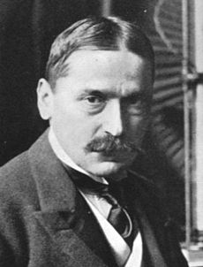

Navigacija:

Mihajlo Idvorski Pupin (Idvor, 9. oktobar 1854 — Njujork, 12. mart 1935) bio je srpski naučnik, pronalazač, profesor na Univerzitetu Kolumbija, nosilac jugoslovenskog odlikovanja Beli orao Prvog reda i počasni konzul Srbije u SAD. Bio je i jedan od osnivača i dugogodišnji predsednik Srpskog narodnog saveza u Americi. Takođe je dobio i Pulicerovu nagradu (1924) za autobiografsko delo "Od pašnjaka do naučenjaka" (engl. From immigrant to inventor).
Mihajlo Pupin je tokom svog naučnog i eksperimetalnog rada dao značajne zaključke važne za polja višestruke telegrafije, bežične telegrafije i telefonije, potom rentgenologije, a ima i velikih zasluga za razvoj elektrotehnike. Takođe je zaslužan i za pronalazak Pupinovih kalemova.
Dobitnik je mnogih naučnih nagrada i medalja, bio je član Američke akademije nauka, Srpske kraljevske akademije i počasni doktor 18 univerziteta.